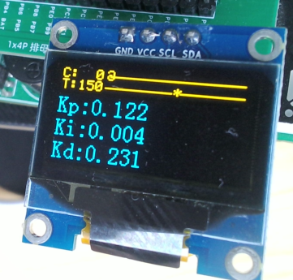

<!DOCTYPE lake>
<h1 data-lake-id="DYcvi" id="DYcvi"><span data-lake-id="u73b161d3" id="u73b161d3">裸机多任务开发框架</span></h1><h2 data-lake-id="vukfI" id="vukfI"><span data-lake-id="ud65a4116" id="ud65a4116">开启定时器</span></h2><p data-lake-id="u781db126" id="u781db126"><span data-lake-id="ua51414b3" id="ua51414b3">使用基本定时器（Timer6) 进行计数，1000Hz，即1秒记录1000个数值，作为时间戳。</span></p><p data-lake-id="u8912130b" id="u8912130b"><span data-lake-id="u6fb0e296" id="u6fb0e296">在</span><code data-lake-id="u658276ac" id="u658276ac"><span data-lake-id="uf45ade51" id="uf45ade51">User</span></code><span data-lake-id="ubb36105b" id="ubb36105b">里创建</span><code data-lake-id="ua47a584d" id="ua47a584d"><span data-lake-id="u9d4ee3f3" id="u9d4ee3f3">task_timer.c</span></code></p><span class="yuque-card-unsupported">[codeblock]</span><p data-lake-id="ue0c2fee1" id="ue0c2fee1"><code data-lake-id="ubac3a886" id="ubac3a886"><span data-lake-id="u3d25570a" id="u3d25570a">User</span></code><span data-lake-id="u9e13e6d3" id="u9e13e6d3">里创建</span><code data-lake-id="ubf557978" id="ubf557978"><span data-lake-id="u515f9138" id="u515f9138">task_timer.h</span></code></p><span class="yuque-card-unsupported">[codeblock]</span><h2 data-lake-id="uCQlz" id="uCQlz"><span data-lake-id="uc8111e04" id="uc8111e04">创建App_Input任务</span></h2><span class="yuque-card-unsupported">[codeblock]</span><h2 data-lake-id="hmeUf" id="hmeUf"><span data-lake-id="u0b612e21" id="u0b612e21">创建App_Balance任务</span></h2><span class="yuque-card-unsupported">[codeblock]</span><h2 data-lake-id="cXbFT" id="cXbFT"><span data-lake-id="ud2cc7869" id="ud2cc7869">创建App_Protocol任务</span></h2><span class="yuque-card-unsupported">[codeblock]</span><h2 data-lake-id="j5tNv" id="j5tNv"><span data-lake-id="udcc76600" id="udcc76600">创建App_OLED任务</span></h2><p data-lake-id="udac7820b" id="udac7820b"></p><span class="yuque-card-unsupported">[codeblock]</span><h2 data-lake-id="WYvEk" id="WYvEk"><span data-lake-id="u778bcbd8" id="u778bcbd8">创建App.h</span></h2><span class="yuque-card-unsupported">[codeblock]</span><h2 data-lake-id="KEoPx" id="KEoPx"><span data-lake-id="u3446f48f" id="u3446f48f">main函数调度任务</span></h2><span class="yuque-card-unsupported">[codeblock]</span><h1 data-lake-id="v1wBE" id="v1wBE"><span data-lake-id="ua19b9e66" id="ua19b9e66">裸机多任务开发框架v2.0版</span></h1><h2 data-lake-id="N9n3l" id="N9n3l"><span data-lake-id="u14192f92" id="u14192f92">声明Task头文件</span></h2><span class="yuque-card-unsupported">[codeblock]</span><h2 data-lake-id="KqCC0" id="KqCC0"><span data-lake-id="u94b36cf5" id="u94b36cf5">创建Task实现</span></h2><span class="yuque-card-unsupported">[codeblock]</span><h2 data-lake-id="GU2rl" id="GU2rl"><span data-lake-id="ud0f69954" id="ud0f69954">定时器处理切换函数</span></h2><span class="yuque-card-unsupported">[codeblock]</span><span class="yuque-card-unsupported">[codeblock]</span><h2 data-lake-id="xwiPW" id="xwiPW"><span data-lake-id="u62286f29" id="u62286f29">main函数执行Task任务</span></h2><span class="yuque-card-unsupported">[codeblock]</span>